Bases de Datos Relacionales · Unidad 1
Sistema de inventario para Distribuidora Nexo S.A. de C.V. (empresa ficticia)
| Alumno(a) | |
|---|---|
| Matrícula | |
| Grupo | |
| Docente | |
| Fecha de entrega | 30 de septiembre de 2026 |
| Repositorio | https://github.com/Vizpok/Sistema_Inventario_Proyecto |
Todas las salidas de consola de este documento son resultados reales obtenidos al ejecutar
database/06_evidencias.sql contra Neon el 2026-09-30 (hora UTC 20:55),
iniciando sesión con el usuario indicado en cada bloque. Las capturas son de la aplicación conectada a la misma base de datos.
Distribuidora Nexo S.A. de C.V. es una empresa ficticia de Monterrey, N.L., que comercializa equipo de cómputo, periféricos, redes, consumibles de impresión, papelería, mobiliario de oficina y equipo de energía. Opera un almacén central y dos sucursales (Saltillo y Guadalajara). Hasta ahora controlaba sus existencias en hojas de cálculo, lo que provocaba diferencias entre lo registrado y lo físico, ventas de productos agotados y nula trazabilidad de quién movía la mercancía.
El objetivo de este proyecto es diseñar, implementar y explotar una base de datos relacional en la nube con Neon (PostgreSQL 18 serverless) que sirva como núcleo de un sistema de inventario, cumpliendo con:
developer y "user", incluyendo permisos por defecto para tablas futuras, y cuatro usuarios asignados a ellos.app_nexo (rol "user")nexo_inventarioLa aplicación no se conecta con el propietario de la base de datos, sino con app_nexo, miembro del rol
"user": puede leer y escribir datos, pero cualquier intento de crear o borrar objetos es rechazado por PostgreSQL.
Los desarrolladores (dev_ana, dev_luis) usan el rol developer para evolucionar el esquema.
Toda la lógica crítica (validar existencias y actualizar el inventario) vive en la base de datos, dentro de
fn_registrar_movimiento, por lo que se cumple sin importar qué cliente la invoque.
| Componente | Tecnología |
|---|---|
| Base de datos | Neon serverless PostgreSQL 18 (AWS · us-east-2 (Ohio)) |
| Lenguajes de BD | SQL (DDL, DCL, DML), PL/pgSQL, CTEs |
| Aplicación | Node.js ≥ 18, Express 5, EJS, bcryptjs, Chart.js |
| Conexión | Driver oficial @neondatabase/serverless (consultas SQL sobre HTTPS, sin puerto 5432) |
| Control de versiones | Git / GitHub — todos los scripts SQL están versionados en database/ |
La figura 1 (página completa, en horizontal, después de la sección 2.3) muestra las 10 entidades, sus atributos con tipo de dato y las llaves
(PK = primaria, FK = foránea, UK = única). Las líneas usan notación pata de gallo: || exactamente uno,
o| cero o uno y o{ cero o muchos.
| Relación | Tipo | Implementación | Regla al borrar |
|---|---|---|---|
| categorias → productos | 1:N | productos.id_categoria | RESTRICT |
| productos ↔ proveedores | N:M | tabla puente producto_proveedor (PK compuesta) con costo, días de entrega y proveedor principal | CASCADE |
| productos ↔ almacenes | N:M | tabla inventario (PK compuesta) con la existencia y la ubicación física | RESTRICT |
| usuarios → almacenes | 1:N (opcional) | almacenes.id_responsable | SET NULL |
| tipos_movimiento → movimientos | 1:N | movimientos.id_tipo | NO ACTION |
| productos / almacenes → movimientos | 1:N | movimientos.id_producto, id_almacen | NO ACTION |
| proveedores → movimientos | 1:N (opcional) | movimientos.id_proveedor (sólo compras/devoluciones) | NO ACTION |
| usuarios → movimientos / bitácora | 1:N | movimientos.id_usuario, bitacora.id_usuario | NO ACTION / SET NULL |
inventario y no en productos, porque depende de ambos.GENERATED ALWAYS AS IDENTITY (estándar SQL) y llaves compuestas en las tablas puente.NUMERIC(12,2) para dinero (sin errores de redondeo de float), TIMESTAMPTZ para fechas (Neon corre en UTC y la app muestra hora de Ciudad de México), SMALLINT en catálogos pequeños, VARCHAR(n) con longitudes realistas y TEXT para descripciones.CHECK (precios ≥ 0, existencia ≥ 0, cantidad > 0, RFC de 12 o 13 caracteres, color hexadecimal, rango mínimo/máximo), UNIQUE (SKU, correo, RFC, nombres) y un índice único parcial que garantiza un solo proveedor principal por producto.movimientos.folio ('MOV-' || lpad(id, 6, '0')): siempre consistente con el id.movimientos.existencia_resultante guarda una foto de la existencia al momento del movimiento (kardex histórico); no es redundancia porque ese valor no puede recalcularse de forma barata ni cambia después.movimientos(fecha) para acelerar el kardex y las vistas.
nexo_inventario. Fuente: docs/diagrama_er.mmd.Generado desde el catálogo de PostgreSQL (pg_attribute, pg_constraint).
| Columna | Tipo | Nulo | Llaves | Por defecto |
|---|---|---|---|---|
| id_usuario | integer | NO | PK | IDENTITY |
| nombre | varchar(80) | NO | ||
| apellidos | varchar(100) | NO | ||
| correo | varchar(120) | NO | UK | |
| password_hash | varchar(100) | NO | ||
| rol | varchar(10) | NO | 'usuario' | |
| puesto | varchar(80) | sí | ||
| activo | boolean | NO | true | |
| ultimo_acceso | timestamptz | sí | ||
| creado_en | timestamptz | NO | now() |
| Columna | Tipo | Nulo | Llaves | Por defecto |
|---|---|---|---|---|
| id_categoria | smallint | NO | PK | IDENTITY |
| nombre | varchar(60) | NO | UK | |
| descripcion | varchar(255) | sí | ||
| color | char(7) | NO | '#4F46E5' | |
| activo | boolean | NO | true | |
| creado_en | timestamptz | NO | now() |
| Columna | Tipo | Nulo | Llaves | Por defecto |
|---|---|---|---|---|
| id_proveedor | integer | NO | PK | IDENTITY |
| razon_social | varchar(150) | NO | ||
| rfc | varchar(13) | NO | UK | |
| contacto | varchar(100) | sí | ||
| telefono | varchar(20) | sí | ||
| correo | varchar(120) | sí | ||
| ciudad | varchar(80) | sí | ||
| direccion | varchar(200) | sí | ||
| activo | boolean | NO | true | |
| creado_en | timestamptz | NO | now() |
| Columna | Tipo | Nulo | Llaves | Por defecto |
|---|---|---|---|---|
| id_almacen | smallint | NO | PK | IDENTITY |
| nombre | varchar(80) | NO | UK | |
| ubicacion | varchar(200) | sí | ||
| id_responsable | integer | sí | FK → usuarios | |
| activo | boolean | NO | true |
| Columna | Tipo | Nulo | Llaves | Por defecto |
|---|---|---|---|---|
| id_tipo | smallint | NO | PK | IDENTITY |
| nombre | varchar(40) | NO | UK | |
| naturaleza | varchar(7) | NO | ||
| requiere_proveedor | boolean | NO | false | |
| descripcion | varchar(255) | sí |
| Columna | Tipo | Nulo | Llaves | Por defecto |
|---|---|---|---|---|
| id_producto | integer | NO | PK | IDENTITY |
| sku | varchar(20) | NO | UK | |
| nombre | varchar(150) | NO | ||
| descripcion | text | sí | ||
| id_categoria | smallint | NO | FK → categorias | |
| unidad | varchar(20) | NO | 'pieza' | |
| precio_compra | numeric(12,2) | NO | ||
| precio_venta | numeric(12,2) | NO | ||
| stock_minimo | integer | NO | 0 | |
| stock_maximo | integer | NO | 0 | |
| activo | boolean | NO | true | |
| creado_en | timestamptz | NO | now() | |
| actualizado_en | timestamptz | NO | now() |
| Columna | Tipo | Nulo | Llaves | Por defecto |
|---|---|---|---|---|
| id_producto | integer | NO | PK, FK → productos | |
| id_proveedor | integer | NO | PK, FK → proveedores | |
| costo | numeric(12,2) | NO | ||
| dias_entrega | smallint | NO | 3 | |
| es_principal | boolean | NO | false |
| Columna | Tipo | Nulo | Llaves | Por defecto |
|---|---|---|---|---|
| id_producto | integer | NO | PK, FK → productos | |
| id_almacen | smallint | NO | PK, FK → almacenes | |
| existencia | integer | NO | 0 | |
| ubicacion | varchar(30) | sí | ||
| actualizado_en | timestamptz | NO | now() |
| Columna | Tipo | Nulo | Llaves | Por defecto |
|---|---|---|---|---|
| id_movimiento | integer | NO | PK | IDENTITY |
| folio | varchar(12) | sí | UK | GENERADA |
| id_tipo | smallint | NO | FK → tipos_movimiento | |
| id_producto | integer | NO | FK → productos | |
| id_almacen | smallint | NO | FK → almacenes | |
| id_proveedor | integer | sí | FK → proveedores | |
| id_usuario | integer | NO | FK → usuarios | |
| cantidad | integer | NO | ||
| costo_unitario | numeric(12,2) | NO | 0 | |
| existencia_resultante | integer | NO | ||
| referencia | varchar(60) | sí | ||
| observaciones | varchar(255) | sí | ||
| fecha | timestamptz | NO | now() |
| Columna | Tipo | Nulo | Llaves | Por defecto |
|---|---|---|---|---|
| id_bitacora | bigint | NO | PK | IDENTITY |
| id_usuario | integer | sí | FK → usuarios | |
| accion | varchar(30) | NO | ||
| modulo | varchar(30) | NO | ||
| descripcion | varchar(255) | sí | ||
| fecha | timestamptz | NO | now() |
El script completo de creación está en database/01_esquema.sql.
Matriz de permisos implementada:
| Permiso | developer | "user" |
|---|---|---|
| Iniciar sesión (LOGIN) | ✔ | ✔ |
| Conectarse a la BD (CONNECT) | ✔ | ✔ |
Crear objetos en public (CREATE) | ✔ | ✘ |
| Tablas temporales (TEMPORARY) | ✔ | ✘ |
| CRUD en tablas existentes | ✔ | ✔ |
| CRUD por defecto en tablas futuras | ✔ | ✔ |
| Ejecutar funciones | ✔ | ✔ |
Usuarios: dev_ana y dev_luis → developer; app_nexo (cuenta de servicio de la aplicación) y
usr_carlos → "user". Puntos clave del script:
USER es palabra reservada en PostgreSQL, por eso el rol se escribe entre comillas: "user".ALTER DEFAULT PRIVILEGES) se declaran para los dos roles que pueden crear objetos: el propietario y developer.ALTER ROLE dev_ana SET role = 'developer' hace que los desarrolladores creen objetos como developer, de modo que las tablas nuevas son del equipo y reciben automáticamente los permisos por defecto.{{PWD_...}} que se sustituyen desde .env.-- ===================================================================== -- Script 02 · Roles y usuarios con permisos diferenciados -- Ejecutar como: propietario de la BD (nexo_inventario_owner) -- -- NOTA sobre contraseñas: los valores {{PWD_...}} se sustituyen desde el -- archivo .env al ejecutar `npm run sql -- database/02_roles_usuarios.sql`. -- Si pegas este script en el SQL Editor de Neon, reemplázalos a mano por -- contraseñas seguras (Neon exige contraseñas con suficiente entropía). -- -- NOTA sobre el nombre "user": USER es palabra reservada en PostgreSQL -- (equivale a CURRENT_USER), por eso el rol se escribe entre comillas. -- ===================================================================== -- Seguridad base: nadie crea objetos por "herencia" del pseudo-rol PUBLIC. -- (Desde PostgreSQL 15 ya no hay CREATE en public para PUBLIC; lo dejamos explícito.) REVOKE CREATE ON SCHEMA public FROM PUBLIC; REVOKE CREATE, TEMPORARY ON DATABASE nexo_inventario FROM PUBLIC; -- ===================================================================== -- 3.1 Rol developer -- ===================================================================== CREATE ROLE developer WITH LOGIN NOSUPERUSER NOCREATEDB NOCREATEROLE INHERIT; -- Permiso de conexión a la base de datos (+ tablas temporales) GRANT CONNECT, TEMPORARY ON DATABASE nexo_inventario TO developer; -- Permiso de creación en el esquema public GRANT USAGE, CREATE ON SCHEMA public TO developer; -- CRUD en tablas existentes (+ secuencias y funciones necesarias para operar) GRANT SELECT, INSERT, UPDATE, DELETE ON ALL TABLES IN SCHEMA public TO developer; GRANT USAGE, SELECT, UPDATE ON ALL SEQUENCES IN SCHEMA public TO developer; GRANT EXECUTE ON ALL FUNCTIONS IN SCHEMA public TO developer; -- ===================================================================== -- 3.2 Rol "user" -- ===================================================================== CREATE ROLE "user" WITH LOGIN NOSUPERUSER NOCREATEDB NOCREATEROLE INHERIT; -- Permiso de conexión (sin TEMPORARY: no puede crear ni tablas temporales) GRANT CONNECT ON DATABASE nexo_inventario TO "user"; -- Sólo USAGE en el esquema: puede ver/usar objetos, NO crearlos GRANT USAGE ON SCHEMA public TO "user"; REVOKE CREATE ON SCHEMA public FROM "user"; -- CRUD en tablas existentes GRANT SELECT, INSERT, UPDATE, DELETE ON ALL TABLES IN SCHEMA public TO "user"; GRANT USAGE, SELECT ON ALL SEQUENCES IN SCHEMA public TO "user"; GRANT EXECUTE ON ALL FUNCTIONS IN SCHEMA public TO "user"; -- ===================================================================== -- 3.3 Permisos por defecto en objetos FUTUROS -- Se definen para los dos roles que pueden crear objetos: -- · nexo_inventario_owner (propietario, ejecuta los scripts) -- · developer (los desarrolladores crean objetos como developer) -- ===================================================================== -- El propietario necesita ser miembro de developer para fijar sus privilegios por defecto GRANT developer TO nexo_inventario_owner WITH INHERIT TRUE, SET TRUE; -- Objetos creados por el propietario ALTER DEFAULT PRIVILEGES FOR ROLE nexo_inventario_owner IN SCHEMA public GRANT SELECT, INSERT, UPDATE, DELETE ON TABLES TO developer, "user"; ALTER DEFAULT PRIVILEGES FOR ROLE nexo_inventario_owner IN SCHEMA public GRANT USAGE, SELECT, UPDATE ON SEQUENCES TO developer; ALTER DEFAULT PRIVILEGES FOR ROLE nexo_inventario_owner IN SCHEMA public GRANT USAGE, SELECT ON SEQUENCES TO "user"; ALTER DEFAULT PRIVILEGES FOR ROLE nexo_inventario_owner IN SCHEMA public GRANT EXECUTE ON FUNCTIONS TO developer, "user"; -- Objetos creados por developer ALTER DEFAULT PRIVILEGES FOR ROLE developer IN SCHEMA public GRANT SELECT, INSERT, UPDATE, DELETE ON TABLES TO developer, "user"; ALTER DEFAULT PRIVILEGES FOR ROLE developer IN SCHEMA public GRANT USAGE, SELECT, UPDATE ON SEQUENCES TO developer; ALTER DEFAULT PRIVILEGES FOR ROLE developer IN SCHEMA public GRANT USAGE, SELECT ON SEQUENCES TO "user"; ALTER DEFAULT PRIVILEGES FOR ROLE developer IN SCHEMA public GRANT EXECUTE ON FUNCTIONS TO developer, "user"; -- ===================================================================== -- 4. Usuarios (roles con contraseña) y asignación de roles -- ===================================================================== -- Desarrolladores CREATE ROLE dev_ana WITH LOGIN PASSWORD '{{PWD_DEV_ANA}}' IN ROLE developer; CREATE ROLE dev_luis WITH LOGIN PASSWORD '{{PWD_DEV_LUIS}}' IN ROLE developer; -- Al iniciar sesión, los desarrolladores actúan como "developer": así los -- objetos que creen pertenecen al rol del equipo y reciben los permisos por defecto. ALTER ROLE dev_ana SET role = 'developer'; ALTER ROLE dev_luis SET role = 'developer'; -- Usuarios operativos CREATE ROLE app_nexo WITH LOGIN PASSWORD '{{PWD_APP_NEXO}}' IN ROLE "user"; -- lo usa la aplicación web CREATE ROLE usr_carlos WITH LOGIN PASSWORD '{{PWD_USR_CARLOS}}' IN ROLE "user"; COMMENT ON ROLE developer IS 'Equipo de desarrollo: CRUD + creación de objetos en public'; COMMENT ON ROLE "user" IS 'Usuarios operativos: CRUD sin creación de objetos'; COMMENT ON ROLE dev_ana IS 'Desarrolladora (miembro de developer)'; COMMENT ON ROLE dev_luis IS 'Desarrollador (miembro de developer)'; COMMENT ON ROLE app_nexo IS 'Cuenta de servicio de la aplicación web (miembro de user)'; COMMENT ON ROLE usr_carlos IS 'Analista de inventario (miembro de user)';
| Vista | CTEs | Propósito |
|---|---|---|
vw_estado_inventario | existencias, actividad, consolidado | Existencia total por producto, valor, salidas de 30 días, días de cobertura y semáforo (SIN STOCK / BAJO / NORMAL / EXCESO). Alimenta dashboard, inventario y catálogo. |
vw_movimientos_diarios | calendario, detalle, agregado | Serie diaria de los últimos 30 días con entradas, salidas e importes; el calendario generado con generate_series hace que los días sin movimientos aparezcan en cero. Alimenta la gráfica del dashboard. |
-- ===================================================================== -- Script 03 · Vistas construidas con CTEs (Common Table Expressions) -- Ejecutar como: propietario de la BD (nexo_inventario_owner) -- Los permisos llegan solos gracias a ALTER DEFAULT PRIVILEGES (script 02). -- ===================================================================== -- --------------------------------------------------------------------- -- Vista 1 · vw_estado_inventario -- Estado consolidado de cada producto activo: existencia total en todos -- los almacenes, valor del inventario, rotación de los últimos 30 días, -- días de cobertura y semáforo (SIN STOCK / BAJO / NORMAL / EXCESO). -- La usan: Dashboard, Inventario y Catálogo. -- --------------------------------------------------------------------- CREATE OR REPLACE VIEW vw_estado_inventario AS WITH existencias AS ( -- CTE 1: existencia total por producto SELECT i.id_producto, SUM(i.existencia)::INTEGER AS existencia_total, COUNT(*) FILTER (WHERE i.existencia > 0)::INTEGER AS almacenes_con_stock FROM inventario i GROUP BY i.id_producto ), actividad AS ( -- CTE 2: rotación reciente por producto SELECT m.id_producto, MAX(m.fecha) AS ultimo_movimiento, COALESCE(SUM(m.cantidad) FILTER ( WHERE t.naturaleza = 'SALIDA' AND m.fecha >= now() - INTERVAL '30 days'), 0)::INTEGER AS salidas_30d FROM movimientos m JOIN tipos_movimiento t ON t.id_tipo = m.id_tipo GROUP BY m.id_producto ), consolidado AS ( -- CTE 3: une catálogo + existencias + actividad SELECT p.id_producto, p.sku, p.nombre, p.unidad, c.id_categoria, c.nombre AS categoria, c.color AS color_categoria, p.precio_compra, p.precio_venta, p.stock_minimo, p.stock_maximo, COALESCE(e.existencia_total, 0) AS existencia_total, COALESCE(e.almacenes_con_stock, 0) AS almacenes_con_stock, COALESCE(a.salidas_30d, 0) AS salidas_30d, a.ultimo_movimiento FROM productos p JOIN categorias c ON c.id_categoria = p.id_categoria LEFT JOIN existencias e ON e.id_producto = p.id_producto LEFT JOIN actividad a ON a.id_producto = p.id_producto WHERE p.activo ) SELECT id_producto, sku, nombre, unidad, id_categoria, categoria, color_categoria, precio_compra, precio_venta, stock_minimo, stock_maximo, existencia_total, almacenes_con_stock, ROUND(existencia_total * precio_compra, 2) AS valor_inventario, salidas_30d, CASE WHEN salidas_30d > 0 THEN ROUND(existencia_total / (salidas_30d / 30.0), 1) END AS dias_cobertura, ultimo_movimiento, CASE WHEN existencia_total = 0 THEN 'SIN STOCK' WHEN existencia_total <= stock_minimo THEN 'BAJO' WHEN stock_maximo > 0 AND existencia_total > stock_maximo THEN 'EXCESO' ELSE 'NORMAL' END AS estado FROM consolidado; COMMENT ON VIEW vw_estado_inventario IS 'Existencia total, valor, rotación 30 días, cobertura y semáforo por producto (CTEs)'; -- --------------------------------------------------------------------- -- Vista 2 · vw_movimientos_diarios -- Serie diaria de los últimos 30 días (hora de Ciudad de México) con -- entradas, salidas, importes y número de movimientos. Los días sin -- actividad aparecen en cero gracias al calendario generado en la CTE. -- La usa: gráfica del Dashboard. -- --------------------------------------------------------------------- CREATE OR REPLACE VIEW vw_movimientos_diarios AS WITH calendario AS ( -- CTE 1: los últimos 30 días, aunque no haya movimientos SELECT generate_series( (now() AT TIME ZONE 'America/Mexico_City')::DATE - 29, (now() AT TIME ZONE 'America/Mexico_City')::DATE, INTERVAL '1 day')::DATE AS dia ), detalle AS ( -- CTE 2: movimientos del periodo con su naturaleza SELECT (m.fecha AT TIME ZONE 'America/Mexico_City')::DATE AS dia, t.naturaleza, m.cantidad, m.cantidad * m.costo_unitario AS importe FROM movimientos m JOIN tipos_movimiento t ON t.id_tipo = m.id_tipo WHERE m.fecha >= now() - INTERVAL '31 days' ), agregado AS ( -- CTE 3: totales por día y naturaleza SELECT dia, COUNT(*) AS movimientos, SUM(cantidad) FILTER (WHERE naturaleza = 'ENTRADA') AS unidades_entrada, SUM(cantidad) FILTER (WHERE naturaleza = 'SALIDA') AS unidades_salida, SUM(importe) FILTER (WHERE naturaleza = 'ENTRADA') AS importe_entrada, SUM(importe) FILTER (WHERE naturaleza = 'SALIDA') AS importe_salida FROM detalle GROUP BY dia ) SELECT c.dia, COALESCE(a.movimientos, 0)::INTEGER AS movimientos, COALESCE(a.unidades_entrada, 0)::INTEGER AS unidades_entrada, COALESCE(a.unidades_salida, 0)::INTEGER AS unidades_salida, COALESCE(a.importe_entrada, 0)::NUMERIC(14,2) AS importe_entrada, COALESCE(a.importe_salida, 0)::NUMERIC(14,2) AS importe_salida FROM calendario c LEFT JOIN agregado a ON a.dia = c.dia ORDER BY c.dia; COMMENT ON VIEW vw_movimientos_diarios IS 'Entradas y salidas por día de los últimos 30 días, con días vacíos en cero (CTEs)';
| Función | Tipo | Descripción |
|---|---|---|
fn_valor_inventario(p_id_categoria, p_id_almacen) | Cálculo (SQL, STABLE) | Valor del inventario = Σ existencia × precio de compra; ambos filtros opcionales. |
fn_registrar_movimiento(...) | Inserción (PL/pgSQL) | Valida datos, bloquea la fila de inventario con FOR UPDATE, rechaza salidas sin existencia, inserta el movimiento con su existencia resultante y actualiza inventario. Todo o nada. |
-- ===================================================================== -- Script 04 · Funciones -- 1) fn_valor_inventario → función de CÁLCULO -- 2) fn_registrar_movimiento → función de INSERCIÓN -- Ejecutar como: propietario de la BD (nexo_inventario_owner) -- ===================================================================== -- --------------------------------------------------------------------- -- Función 1 (cálculo) · fn_valor_inventario -- Calcula el valor monetario del inventario (existencia × precio de -- compra). Ambos filtros son opcionales: NULL = todos. -- SELECT fn_valor_inventario(); -- toda la empresa -- SELECT fn_valor_inventario(NULL, 2); -- sólo el almacén 2 -- SELECT fn_valor_inventario(3); -- sólo la categoría 3 -- --------------------------------------------------------------------- CREATE OR REPLACE FUNCTION fn_valor_inventario( p_id_categoria INTEGER DEFAULT NULL, p_id_almacen INTEGER DEFAULT NULL ) RETURNS NUMERIC(14,2) LANGUAGE sql STABLE AS $$ SELECT COALESCE(SUM(i.existencia * p.precio_compra), 0)::NUMERIC(14,2) FROM inventario i JOIN productos p ON p.id_producto = i.id_producto WHERE p.activo AND (p_id_categoria IS NULL OR p.id_categoria = p_id_categoria) AND (p_id_almacen IS NULL OR i.id_almacen = p_id_almacen); $$; COMMENT ON FUNCTION fn_valor_inventario(INTEGER, INTEGER) IS 'Cálculo: valor del inventario (existencia × precio de compra), filtrable por categoría y almacén'; -- --------------------------------------------------------------------- -- Función 2 (inserción) · fn_registrar_movimiento -- Registra una entrada o salida de mercancía de forma atómica: -- 1. Valida cantidad, tipo, proveedor, producto y almacén. -- 2. Bloquea la fila de inventario (FOR UPDATE) para evitar carreras. -- 3. En salidas verifica que haya existencia suficiente. -- 4. INSERTA el movimiento (kardex) con la existencia resultante. -- 5. Actualiza (o crea) la existencia en la tabla inventario. -- Devuelve el id del movimiento creado. Si algo falla, no se guarda nada. -- --------------------------------------------------------------------- CREATE OR REPLACE FUNCTION fn_registrar_movimiento( p_id_producto INTEGER, p_id_almacen INTEGER, p_id_tipo INTEGER, p_cantidad INTEGER, p_id_usuario INTEGER, p_costo_unitario NUMERIC DEFAULT NULL, p_id_proveedor INTEGER DEFAULT NULL, p_referencia VARCHAR DEFAULT NULL, p_observaciones VARCHAR DEFAULT NULL, p_fecha TIMESTAMPTZ DEFAULT now() ) RETURNS INTEGER LANGUAGE plpgsql AS $$ DECLARE v_naturaleza VARCHAR(7); v_req_prov BOOLEAN; v_precio NUMERIC(12,2); v_existencia INTEGER; v_nueva INTEGER; v_id INTEGER; BEGIN IF p_cantidad IS NULL OR p_cantidad <= 0 THEN RAISE EXCEPTION 'La cantidad debe ser mayor a cero (recibido: %)', p_cantidad; END IF; SELECT naturaleza, requiere_proveedor INTO v_naturaleza, v_req_prov FROM tipos_movimiento WHERE id_tipo = p_id_tipo; IF NOT FOUND THEN RAISE EXCEPTION 'El tipo de movimiento % no existe', p_id_tipo; END IF; IF v_req_prov AND p_id_proveedor IS NULL THEN RAISE EXCEPTION 'Este tipo de movimiento requiere indicar un proveedor'; END IF; SELECT precio_compra INTO v_precio FROM productos WHERE id_producto = p_id_producto AND activo; IF NOT FOUND THEN RAISE EXCEPTION 'El producto % no existe o está inactivo', p_id_producto; END IF; PERFORM 1 FROM almacenes WHERE id_almacen = p_id_almacen AND activo; IF NOT FOUND THEN RAISE EXCEPTION 'El almacén % no existe o está inactivo', p_id_almacen; END IF; -- Garantiza que exista la fila de inventario y la bloquea INSERT INTO inventario (id_producto, id_almacen, existencia) VALUES (p_id_producto, p_id_almacen, 0) ON CONFLICT (id_producto, id_almacen) DO NOTHING; SELECT existencia INTO v_existencia FROM inventario WHERE id_producto = p_id_producto AND id_almacen = p_id_almacen FOR UPDATE; IF v_naturaleza = 'ENTRADA' THEN v_nueva := v_existencia + p_cantidad; ELSE IF v_existencia < p_cantidad THEN RAISE EXCEPTION 'Existencia insuficiente: hay % y se solicitan %', v_existencia, p_cantidad; END IF; v_nueva := v_existencia - p_cantidad; END IF; INSERT INTO movimientos (id_tipo, id_producto, id_almacen, id_proveedor, id_usuario, cantidad, costo_unitario, existencia_resultante, referencia, observaciones, fecha) VALUES (p_id_tipo, p_id_producto, p_id_almacen, p_id_proveedor, p_id_usuario, p_cantidad, COALESCE(p_costo_unitario, v_precio), v_nueva, NULLIF(trim(p_referencia), ''), NULLIF(trim(p_observaciones), ''), p_fecha) RETURNING id_movimiento INTO v_id; UPDATE inventario SET existencia = v_nueva, actualizado_en = now() WHERE id_producto = p_id_producto AND id_almacen = p_id_almacen; RETURN v_id; END; $$; COMMENT ON FUNCTION fn_registrar_movimiento(INTEGER, INTEGER, INTEGER, INTEGER, INTEGER, NUMERIC, INTEGER, VARCHAR, VARCHAR, TIMESTAMPTZ) IS 'Inserción: registra una entrada/salida validando existencias y actualiza el inventario';
Cada bloque muestra el usuario con el que se inició sesión, la sentencia ejecutada y la salida real de PostgreSQL. Las sentencias marcadas como error esperado debían fallar para demostrar que un permiso o una validación funciona.
| Proyecto en Neon | |
|---|---|
| Proyecto | nexo-inventario-u1 |
| ID del proyecto | small-brook-55535774 |
| Proveedor y región | AWS · us-east-2 (Ohio) |
| Versión | PostgreSQL 18 |
| Rama | main (rama principal) |
| Base de datos | nexo_inventario |
| Propietario | nexo_inventario_owner |
| Conexión | Pooler de Neon con SSL obligatorio (sslmode=require); la app usa el driver HTTPS @neondatabase/serverless |
| Creado | 2026-09-30 20:19 UTC |
SELECT current_database() AS base_de_datos, current_user AS usuario, split_part(version(), ' on ', 1) AS motor, inet_server_port() AS puerto, pg_size_pretty(pg_database_size(current_database())) AS tamano, to_char(now() AT TIME ZONE 'America/Mexico_City', 'YYYY-MM-DD HH24:MI') AS fecha_hora_mx;
base_de_datos | usuario | motor | puerto | tamano | fecha_hora_mx -----------------+-----------------------+---------------------------+--------+---------+------------------ nexo_inventario | nexo_inventario_owner | PostgreSQL 18.6 (6569466) | 5432 | 8712 kB | 2026-09-30 14:55 (1 fila)
SELECT n.nspname AS esquema, pg_get_userbyid(n.nspowner) AS propietario FROM pg_namespace n WHERE n.nspname NOT LIKE 'pg\_%' AND n.nspname <> 'information_schema' ORDER BY 1;
esquema | propietario ---------+------------------- public | pg_database_owner (1 fila)
SELECT c.relname AS tabla, (SELECT count(*) FROM information_schema.columns col WHERE col.table_schema = 'public' AND col.table_name = c.relname) AS columnas, (xpath('/row/n/text()', query_to_xml(format('SELECT count(*) AS n FROM %I', c.relname), false, true, '')))[1]::text::int AS registros, obj_description(c.oid, 'pg_class') AS descripcion FROM pg_class c JOIN pg_namespace n ON n.oid = c.relnamespace WHERE n.nspname = 'public' AND c.relkind = 'r' ORDER BY c.relname;
tabla | columnas | registros | descripcion --------------------+----------+-----------+--------------------------------------------------------------- almacenes | 5 | 3 | Almacenes / sucursales físicas bitacora | 6 | 1 | Auditoría de acciones de los usuarios categorias | 6 | 8 | Categorías del catálogo de productos inventario | 5 | 99 | Existencias por producto y almacén (N:M) movimientos | 13 | 503 | Kardex: historial de entradas y salidas producto_proveedor | 5 | 52 | Relación N:M producto-proveedor con costo y tiempo de entrega productos | 13 | 37 | Catálogo de productos proveedores | 10 | 8 | Proveedores de mercancía tipos_movimiento | 5 | 9 | Motivos de entrada y salida de mercancía usuarios | 10 | 5 | Usuarios del sistema web (rol de aplicación admin/usuario) (10 filas)
SELECT tc.table_name AS tabla, tc.constraint_name AS restriccion, string_agg(kcu.column_name, ', ' ORDER BY kcu.ordinal_position) AS columnas FROM information_schema.table_constraints tc JOIN information_schema.key_column_usage kcu ON kcu.constraint_name = tc.constraint_name AND kcu.table_schema = tc.table_schema WHERE tc.table_schema = 'public' AND tc.constraint_type = 'PRIMARY KEY' GROUP BY tc.table_name, tc.constraint_name ORDER BY tc.table_name;
tabla | restriccion | columnas --------------------+-----------------------+--------------------------- almacenes | almacenes_pkey | id_almacen bitacora | bitacora_pkey | id_bitacora categorias | categorias_pkey | id_categoria inventario | pk_inventario | id_producto, id_almacen movimientos | movimientos_pkey | id_movimiento producto_proveedor | pk_producto_proveedor | id_producto, id_proveedor productos | productos_pkey | id_producto proveedores | proveedores_pkey | id_proveedor tipos_movimiento | tipos_movimiento_pkey | id_tipo usuarios | usuarios_pkey | id_usuario (10 filas)
SELECT conrelid::regclass AS tabla_hija, conname AS restriccion, pg_get_constraintdef(oid) AS definicion FROM pg_constraint WHERE contype = 'f' AND connamespace = 'public'::regnamespace ORDER BY conrelid::regclass::text, conname;
tabla_hija | restriccion | definicion --------------------+--------------------------+----------------------------------------------------------------------------------------------------- almacenes | fk_almacenes_responsable | FOREIGN KEY (id_responsable) REFERENCES usuarios(id_usuario) ON UPDATE CASCADE ON DELETE SET NULL bitacora | fk_bitacora_usuario | FOREIGN KEY (id_usuario) REFERENCES usuarios(id_usuario) ON UPDATE CASCADE ON DELETE SET NULL inventario | fk_inventario_almacen | FOREIGN KEY (id_almacen) REFERENCES almacenes(id_almacen) ON UPDATE CASCADE ON DELETE RESTRICT inventario | fk_inventario_producto | FOREIGN KEY (id_producto) REFERENCES productos(id_producto) ON UPDATE CASCADE ON DELETE RESTRICT movimientos | fk_mov_almacen | FOREIGN KEY (id_almacen) REFERENCES almacenes(id_almacen) movimientos | fk_mov_producto | FOREIGN KEY (id_producto) REFERENCES productos(id_producto) movimientos | fk_mov_proveedor | FOREIGN KEY (id_proveedor) REFERENCES proveedores(id_proveedor) movimientos | fk_mov_tipo | FOREIGN KEY (id_tipo) REFERENCES tipos_movimiento(id_tipo) movimientos | fk_mov_usuario | FOREIGN KEY (id_usuario) REFERENCES usuarios(id_usuario) producto_proveedor | fk_pp_producto | FOREIGN KEY (id_producto) REFERENCES productos(id_producto) ON UPDATE CASCADE ON DELETE CASCADE producto_proveedor | fk_pp_proveedor | FOREIGN KEY (id_proveedor) REFERENCES proveedores(id_proveedor) ON UPDATE CASCADE ON DELETE CASCADE productos | fk_productos_categoria | FOREIGN KEY (id_categoria) REFERENCES categorias(id_categoria) ON UPDATE CASCADE ON DELETE RESTRICT (12 filas)
SELECT conrelid::regclass AS tabla, conname AS restriccion, CASE contype WHEN 'c' THEN 'CHECK' ELSE 'UNIQUE' END AS tipo, pg_get_constraintdef(oid) AS definicion FROM pg_constraint WHERE contype IN ('c', 'u') AND connamespace = 'public'::regnamespace ORDER BY conrelid::regclass::text, contype, conname;
tabla | restriccion | tipo | definicion
--------------------+-----------------------------+--------+-----------------------------------------------------------------------------------------------------------------
almacenes | almacenes_nombre_key | UNIQUE | UNIQUE (nombre)
categorias | ck_categorias_color | CHECK | CHECK ((color ~ '^#[0-9A-Fa-f]{6}$'::text))
categorias | categorias_nombre_key | UNIQUE | UNIQUE (nombre)
inventario | ck_inventario_existencia | CHECK | CHECK ((existencia >= 0))
movimientos | ck_mov_cantidad | CHECK | CHECK ((cantidad > 0))
movimientos | ck_mov_costo | CHECK | CHECK ((costo_unitario >= (0)::numeric))
movimientos | ck_mov_resultante | CHECK | CHECK ((existencia_resultante >= 0))
movimientos | uq_movimientos_folio | UNIQUE | UNIQUE (folio)
producto_proveedor | ck_pp_costo | CHECK | CHECK ((costo >= (0)::numeric))
producto_proveedor | ck_pp_dias | CHECK | CHECK ((dias_entrega >= 0))
productos | ck_productos_pcompra | CHECK | CHECK ((precio_compra >= (0)::numeric))
productos | ck_productos_pventa | CHECK | CHECK ((precio_venta >= (0)::numeric))
productos | ck_productos_rango_stock | CHECK | CHECK (((stock_maximo = 0) OR (stock_maximo >= stock_minimo)))
productos | ck_productos_smax | CHECK | CHECK ((stock_maximo >= 0))
productos | ck_productos_smin | CHECK | CHECK ((stock_minimo >= 0))
productos | productos_sku_key | UNIQUE | UNIQUE (sku)
proveedores | ck_proveedores_rfc | CHECK | CHECK ((char_length((rfc)::text) = ANY (ARRAY[12, 13])))
proveedores | proveedores_rfc_key | UNIQUE | UNIQUE (rfc)
tipos_movimiento | ck_tipos_naturaleza | CHECK | CHECK (((naturaleza)::text = ANY ((ARRAY['ENTRADA'::character varying, 'SALIDA'::character varying])::text[])))
tipos_movimiento | tipos_movimiento_nombre_key | UNIQUE | UNIQUE (nombre)
usuarios | ck_usuarios_rol | CHECK | CHECK (((rol)::text = ANY ((ARRAY['admin'::character varying, 'usuario'::character varying])::text[])))
usuarios | usuarios_correo_key | UNIQUE | UNIQUE (correo)
(22 filas)
SELECT column_name AS columna, CASE WHEN data_type = 'character varying' THEN 'varchar(' || character_maximum_length || ')' WHEN data_type = 'numeric' THEN 'numeric(' || numeric_precision || ',' || numeric_scale || ')' ELSE data_type END AS tipo, is_nullable AS nulo, COALESCE(column_default, CASE WHEN is_identity = 'YES' THEN 'IDENTITY' END, CASE WHEN is_generated = 'ALWAYS' THEN 'GENERADA: ' || generation_expression END) AS valor_por_defecto FROM information_schema.columns WHERE table_schema = 'public' AND table_name = 'movimientos' ORDER BY ordinal_position;
columna | tipo | nulo | valor_por_defecto
-----------------------+--------------------------+------+-----------------------------------------------------------------------
id_movimiento | integer | NO | IDENTITY
folio | varchar(12) | YES | GENERADA: ('MOV-'::text || lpad((id_movimiento)::text, 6, '0'::text))
id_tipo | smallint | NO |
id_producto | integer | NO |
id_almacen | smallint | NO |
id_proveedor | integer | YES |
id_usuario | integer | NO |
cantidad | integer | NO |
costo_unitario | numeric(12,2) | NO | 0
existencia_resultante | integer | NO |
referencia | varchar(60) | YES |
observaciones | varchar(255) | YES |
fecha | timestamp with time zone | NO | now()
(13 filas)
SELECT rolname AS rol, rolcanlogin AS login, rolinherit AS hereda, rolcreatedb AS crea_bd, rolcreaterole AS crea_roles, rolsuper AS superusuario, shobj_description(oid, 'pg_authid') AS descripcion FROM pg_roles WHERE rolname IN ('developer', 'user') ORDER BY rolname;
rol | login | hereda | crea_bd | crea_roles | superusuario | descripcion -----------+-------+--------+---------+------------+--------------+------------------------------------------------------------ developer | t | t | f | f | f | Equipo de desarrollo: CRUD + creación de objetos en public user | t | t | f | f | f | Usuarios operativos: CRUD sin creación de objetos (2 filas)
SELECT r AS rol, has_database_privilege(r, current_database(), 'CONNECT') AS conectar, has_database_privilege(r, current_database(), 'TEMPORARY') AS temporales, has_database_privilege(r, current_database(), 'CREATE') AS crear_esquemas, has_schema_privilege(r, 'public', 'USAGE') AS usar_public, has_schema_privilege(r, 'public', 'CREATE') AS crear_en_public FROM unnest(ARRAY['developer', 'user']) AS r;
rol | conectar | temporales | crear_esquemas | usar_public | crear_en_public -----------+----------+------------+----------------+-------------+----------------- developer | t | t | f | t | t user | t | f | f | t | f (2 filas)
SELECT grantee AS rol, table_name AS tabla, string_agg(privilege_type, ', ' ORDER BY privilege_type) AS privilegios FROM information_schema.role_table_grants WHERE table_schema = 'public' AND grantee IN ('developer', 'user') GROUP BY grantee, table_name ORDER BY grantee, table_name;
rol | tabla | privilegios -----------+------------------------+-------------------------------- developer | almacenes | DELETE, INSERT, SELECT, UPDATE developer | bitacora | DELETE, INSERT, SELECT, UPDATE developer | categorias | DELETE, INSERT, SELECT, UPDATE developer | inventario | DELETE, INSERT, SELECT, UPDATE developer | movimientos | DELETE, INSERT, SELECT, UPDATE developer | producto_proveedor | DELETE, INSERT, SELECT, UPDATE developer | productos | DELETE, INSERT, SELECT, UPDATE developer | proveedores | DELETE, INSERT, SELECT, UPDATE developer | tipos_movimiento | DELETE, INSERT, SELECT, UPDATE developer | usuarios | DELETE, INSERT, SELECT, UPDATE developer | vw_estado_inventario | DELETE, INSERT, SELECT, UPDATE developer | vw_movimientos_diarios | DELETE, INSERT, SELECT, UPDATE user | almacenes | DELETE, INSERT, SELECT, UPDATE user | bitacora | DELETE, INSERT, SELECT, UPDATE user | categorias | DELETE, INSERT, SELECT, UPDATE user | inventario | DELETE, INSERT, SELECT, UPDATE user | movimientos | DELETE, INSERT, SELECT, UPDATE user | producto_proveedor | DELETE, INSERT, SELECT, UPDATE user | productos | DELETE, INSERT, SELECT, UPDATE user | proveedores | DELETE, INSERT, SELECT, UPDATE user | tipos_movimiento | DELETE, INSERT, SELECT, UPDATE user | usuarios | DELETE, INSERT, SELECT, UPDATE user | vw_estado_inventario | DELETE, INSERT, SELECT, UPDATE user | vw_movimientos_diarios | DELETE, INSERT, SELECT, UPDATE (24 filas)
SELECT pg_get_userbyid(d.defaclrole) AS cuando_crea, CASE d.defaclobjtype WHEN 'r' THEN 'tablas' WHEN 'S' THEN 'secuencias' WHEN 'f' THEN 'funciones' END AS objetos, a.grantee::regrole AS se_otorga_a, string_agg(a.privilege_type, ', ' ORDER BY a.privilege_type) AS privilegios FROM pg_default_acl d CROSS JOIN LATERAL aclexplode(d.defaclacl) a WHERE pg_get_userbyid(d.defaclrole) IN ('nexo_inventario_owner', 'developer') GROUP BY 1, 2, 3 ORDER BY 1, 2, 3;
cuando_crea | objetos | se_otorga_a | privilegios -----------------------+------------+-------------+-------------------------------- developer | funciones | developer | EXECUTE developer | funciones | "user" | EXECUTE developer | secuencias | developer | SELECT, UPDATE, USAGE developer | secuencias | "user" | SELECT, USAGE developer | tablas | developer | DELETE, INSERT, SELECT, UPDATE developer | tablas | "user" | DELETE, INSERT, SELECT, UPDATE nexo_inventario_owner | funciones | developer | EXECUTE nexo_inventario_owner | funciones | "user" | EXECUTE nexo_inventario_owner | secuencias | developer | SELECT, UPDATE, USAGE nexo_inventario_owner | secuencias | "user" | SELECT, USAGE nexo_inventario_owner | tablas | developer | DELETE, INSERT, SELECT, UPDATE nexo_inventario_owner | tablas | "user" | DELETE, INSERT, SELECT, UPDATE (12 filas)
SELECT u.rolname AS usuario, u.rolcanlogin AS login, g.rolname AS rol_asignado, m.inherit_option AS hereda_permisos, m.set_option AS puede_set_role, (SELECT string_agg(s, ', ') FROM unnest(u.rolconfig) s) AS configuracion, shobj_description(u.oid, 'pg_authid') AS descripcion FROM pg_auth_members m JOIN pg_roles u ON u.oid = m.member JOIN pg_roles g ON g.oid = m.roleid WHERE g.rolname IN ('developer', 'user') AND u.rolname <> 'nexo_inventario_owner' ORDER BY g.rolname, u.rolname;
usuario | login | rol_asignado | hereda_permisos | puede_set_role | configuracion | descripcion ------------+-------+--------------+-----------------+----------------+----------------+----------------------------------------------------------- dev_ana | t | developer | t | t | role=developer | Desarrolladora (miembro de developer) dev_luis | t | developer | t | t | role=developer | Desarrollador (miembro de developer) app_nexo | t | user | t | t | | Cuenta de servicio de la aplicación web (miembro de user) usr_carlos | t | user | t | t | | Analista de inventario (miembro de user) (4 filas)
SELECT session_user AS sesion, current_user AS actua_como;
sesion | actua_como ---------+------------ dev_ana | developer (1 fila)
CREATE TABLE evidencia_developer (id SERIAL PRIMARY KEY, nota VARCHAR(60), creado_en TIMESTAMPTZ DEFAULT now());
CREATE TABLE
INSERT INTO evidencia_developer (nota) VALUES ('Tabla creada por un desarrollador') RETURNING *;
id | nota | creado_en ----+-----------------------------------+------------------------ 1 | Tabla creada por un desarrollador | 2026-09-30 20:55:16+00 (1 fila)
SELECT session_user AS sesion, current_user AS actua_como;
sesion | actua_como ------------+------------ usr_carlos | usr_carlos (1 fila)
INSERT INTO evidencia_developer (nota) VALUES ('Insertado por usr_carlos') RETURNING *;
id | nota | creado_en ----+--------------------------+------------------------ 2 | Insertado por usr_carlos | 2026-09-30 20:55:16+00 (1 fila)
UPDATE evidencia_developer SET nota = nota || ' (editado)' WHERE nota LIKE '%usr_carlos%' RETURNING *;
id | nota | creado_en ----+------------------------------------+------------------------ 2 | Insertado por usr_carlos (editado) | 2026-09-30 20:55:16+00 (1 fila)
SELECT * FROM evidencia_developer ORDER BY id;
id | nota | creado_en ----+------------------------------------+------------------------ 1 | Tabla creada por un desarrollador | 2026-09-30 20:55:16+00 2 | Insertado por usr_carlos (editado) | 2026-09-30 20:55:16+00 (2 filas)
DELETE FROM evidencia_developer WHERE nota LIKE '%usr_carlos%' RETURNING id;
id ---- 2 (1 fila)
CREATE TABLE intento_usuario (id INTEGER);
ERROR: permission denied for schema public SQLSTATE: 42501
✔ Error esperado: el permiso / la validación funciona.
CREATE VIEW vw_intento AS SELECT 1 AS x;
ERROR: permission denied for schema public SQLSTATE: 42501
✔ Error esperado: el permiso / la validación funciona.
CREATE TEMP TABLE intento_temporal (id INTEGER);
ERROR: permission denied to create temporary tables in database "nexo_inventario" SQLSTATE: 42501
✔ Error esperado: el permiso / la validación funciona.
DROP TABLE evidencia_developer;
ERROR: must be owner of table evidencia_developer SQLSTATE: 42501
✔ Error esperado: el permiso / la validación funciona.
INSERT INTO categorias (nombre, descripcion, color) VALUES ('Evidencia CRUD', 'Registro temporal', '#123456') RETURNING id_categoria, nombre;
id_categoria | nombre
--------------+----------------
9 | Evidencia CRUD
(1 fila)UPDATE categorias SET descripcion = 'Registro temporal (actualizado)' WHERE nombre = 'Evidencia CRUD' RETURNING id_categoria, descripcion;
id_categoria | descripcion
--------------+---------------------------------
9 | Registro temporal (actualizado)
(1 fila)SELECT id_categoria, nombre, descripcion FROM categorias WHERE nombre = 'Evidencia CRUD';
id_categoria | nombre | descripcion
--------------+----------------+---------------------------------
9 | Evidencia CRUD | Registro temporal (actualizado)
(1 fila)DELETE FROM categorias WHERE nombre = 'Evidencia CRUD' RETURNING id_categoria;
id_categoria
--------------
9
(1 fila)
DROP TABLE evidencia_developer;
DROP TABLE
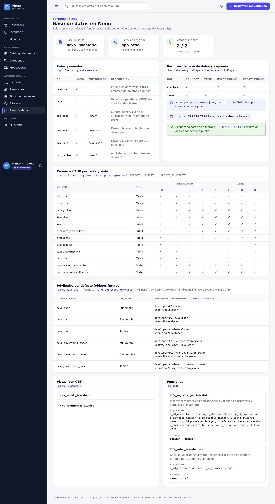
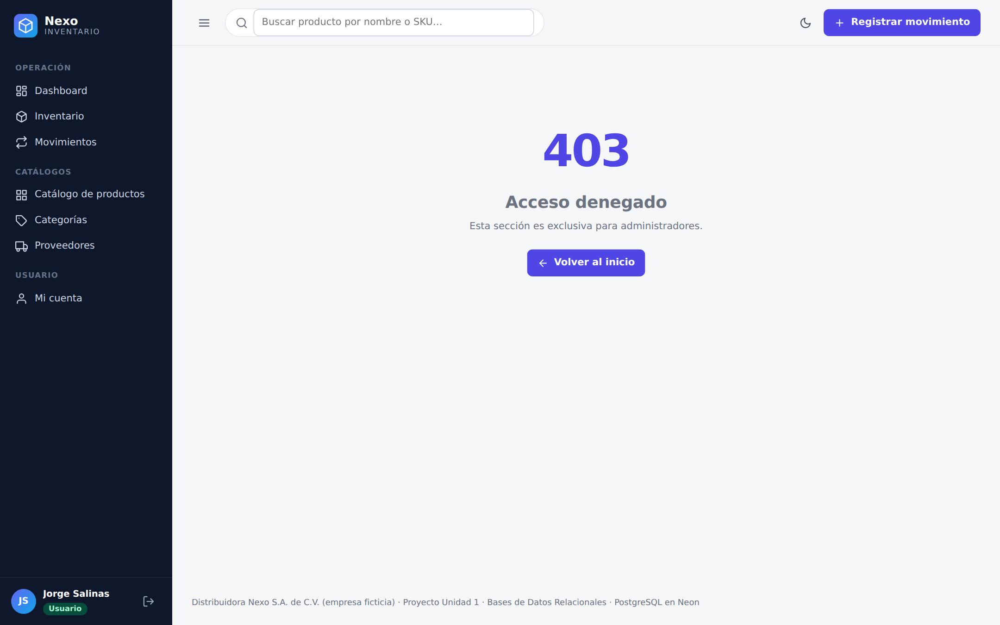
SELECT viewname AS vista, viewowner AS propietario, obj_description(format('%I', viewname)::regclass, 'pg_class') AS descripcion FROM pg_views WHERE schemaname = 'public' ORDER BY viewname;
vista | propietario | descripcion ------------------------+-----------------------+------------------------------------------------------------------------------------- vw_estado_inventario | nexo_inventario_owner | Existencia total, valor, rotación 30 días, cobertura y semáforo por producto (CTEs) vw_movimientos_diarios | nexo_inventario_owner | Entradas y salidas por día de los últimos 30 días, con días vacíos en cero (CTEs) (2 filas)
SELECT sku, nombre, categoria, existencia_total AS existencia, stock_minimo AS minimo, valor_inventario AS valor, salidas_30d, dias_cobertura AS cobertura_dias, estado FROM vw_estado_inventario WHERE estado <> 'NORMAL' ORDER BY CASE estado WHEN 'SIN STOCK' THEN 0 WHEN 'BAJO' THEN 1 ELSE 2 END, nombre;
sku | nombre | categoria | existencia | minimo | valor | salidas_30d | cobertura_dias | estado -------------+-----------------------------------------+----------------+------------+--------+----------+-------------+----------------+----------- MOB-ARC-001 | Archivero metálico 4 gavetas | Mobiliario | 0 | 2 | 0.00 | 13 | 0.0 | SIN STOCK COM-LAP-002 | Laptop HP ProBook 450 G10 i5 16GB 512GB | Cómputo | 0 | 4 | 0.00 | 6 | 0.0 | SIN STOCK COM-LAP-003 | MacBook Air 13" M3 8GB 256GB | Cómputo | 0 | 2 | 0.00 | 10 | 0.0 | SIN STOCK RED-AP-001 | Access Point Ubiquiti UniFi U6 Lite | Redes | 4 | 4 | 9800.00 | 11 | 10.9 | BAJO PER-DIA-001 | Diadema Jabra Evolve2 30 USB-C | Periféricos | 8 | 10 | 9200.00 | 19 | 12.6 | BAJO ALM-HDD-001 | Disco externo Seagate 2TB USB 3.0 | Almacenamiento | 4 | 8 | 5000.00 | 22 | 5.5 | BAJO PAP-ENG-001 | Engrapadora Pilot metálica | Papelería | 5 | 15 | 575.00 | 8 | 18.7 | BAJO MOB-ESC-001 | Escritorio en L 150 cm | Mobiliario | 1 | 2 | 3100.00 | 6 | 5.0 | BAJO ENE-MUL-001 | Multicontacto con supresor 6 salidas | Energía | 2 | 20 | 420.00 | 20 | 3.0 | BAJO ALM-SSD-001 | SSD Kingston NV2 1TB NVMe | Almacenamiento | 10 | 12 | 9500.00 | 42 | 7.1 | BAJO IMP-TON-001 | Tóner HP 58A negro | Impresión | 8 | 10 | 13200.00 | 17 | 14.1 | BAJO PAP-BOL-001 | Bolígrafo BIC Cristal azul (caja 12) | Papelería | 236 | 40 | 11328.00 | 87 | 81.4 | EXCESO PER-TEC-001 | Teclado Logitech K120 USB español | Periféricos | 166 | 30 | 27390.00 | 46 | 108.3 | EXCESO (13 filas)
SELECT dia, movimientos, unidades_entrada, unidades_salida, importe_entrada, importe_salida FROM vw_movimientos_diarios ORDER BY dia DESC LIMIT 10;
dia | movimientos | unidades_entrada | unidades_salida | importe_entrada | importe_salida ------------+-------------+------------------+-----------------+-----------------+---------------- 2026-09-30 | 14 | 318 | 80 | 43046.00 | 216190.00 2026-09-29 | 9 | 33 | 22 | 42520.00 | 17473.00 2026-09-28 | 10 | 15 | 4 | 136566.00 | 4270.00 2026-09-27 | 4 | 4 | 9 | 11200.00 | 38650.00 2026-09-26 | 4 | 18 | 4 | 70200.00 | 45000.00 2026-09-25 | 5 | 52 | 8 | 56200.00 | 33700.00 2026-09-24 | 7 | 5 | 24 | 11250.00 | 48710.00 2026-09-23 | 8 | 21 | 16 | 42850.00 | 8035.00 2026-09-22 | 5 | 16 | 7 | 2320.00 | 8485.00 2026-09-21 | 9 | 75 | 27 | 24680.00 | 35820.00 (10 filas)
SELECT p.proname AS funcion, p.pronargs AS parametros, p.pronargdefaults AS con_valor_por_defecto, pg_get_function_result(p.oid) AS retorna, l.lanname AS lenguaje, CASE p.provolatile WHEN 's' THEN 'STABLE' WHEN 'i' THEN 'IMMUTABLE' ELSE 'VOLATILE' END AS volatilidad FROM pg_proc p JOIN pg_language l ON l.oid = p.prolang WHERE p.pronamespace = 'public'::regnamespace ORDER BY p.proname;
funcion | parametros | con_valor_por_defecto | retorna | lenguaje | volatilidad -------------------------+------------+-----------------------+---------+----------+------------- fn_registrar_movimiento | 10 | 5 | integer | plpgsql | VOLATILE fn_valor_inventario | 2 | 2 | numeric | sql | STABLE (2 filas)
SELECT p.proname AS funcion, a.n, a.parametro, format_type(a.tipo, NULL) AS tipo FROM pg_proc p CROSS JOIN LATERAL unnest(p.proargnames, p.proargtypes::oid[]) WITH ORDINALITY AS a(parametro, tipo, n) WHERE p.pronamespace = 'public'::regnamespace ORDER BY p.proname, a.n;
funcion | n | parametro | tipo -------------------------+----+------------------+-------------------------- fn_registrar_movimiento | 1 | p_id_producto | integer fn_registrar_movimiento | 2 | p_id_almacen | integer fn_registrar_movimiento | 3 | p_id_tipo | integer fn_registrar_movimiento | 4 | p_cantidad | integer fn_registrar_movimiento | 5 | p_id_usuario | integer fn_registrar_movimiento | 6 | p_costo_unitario | numeric fn_registrar_movimiento | 7 | p_id_proveedor | integer fn_registrar_movimiento | 8 | p_referencia | character varying fn_registrar_movimiento | 9 | p_observaciones | character varying fn_registrar_movimiento | 10 | p_fecha | timestamp with time zone fn_valor_inventario | 1 | p_id_categoria | integer fn_valor_inventario | 2 | p_id_almacen | integer (12 filas)
SELECT 'Toda la empresa' AS alcance, fn_valor_inventario() AS valor UNION ALL SELECT 'Almacén: ' || nombre, fn_valor_inventario(NULL, id_almacen) FROM almacenes UNION ALL SELECT 'Categoría: ' || nombre, fn_valor_inventario(id_categoria) FROM categorias ORDER BY valor DESC;
alcance | valor ------------------------------------+----------- Toda la empresa | 893088.00 Almacén: Almacén Central Monterrey | 650270.00 Categoría: Cómputo | 348600.00 Categoría: Periféricos | 206760.00 Almacén: Sucursal Guadalajara | 140280.00 Almacén: Sucursal Saltillo | 102538.00 Categoría: Impresión | 84650.00 Categoría: Redes | 83640.00 Categoría: Papelería | 53858.00 Categoría: Energía | 44830.00 Categoría: Almacenamiento | 39450.00 Categoría: Mobiliario | 31300.00 (12 filas)
SELECT existencia AS existencia_antes FROM inventario WHERE id_producto = (SELECT id_producto FROM productos WHERE sku = 'PER-DIA-001') AND id_almacen = (SELECT id_almacen FROM almacenes WHERE nombre = 'Almacén Central Monterrey');
existencia_antes
------------------
0
(1 fila)SELECT fn_registrar_movimiento( (SELECT id_producto FROM productos WHERE sku = 'PER-DIA-001'), (SELECT id_almacen FROM almacenes WHERE nombre = 'Almacén Central Monterrey'), (SELECT id_tipo FROM tipos_movimiento WHERE nombre = 'Compra a proveedor'), 20, (SELECT id_usuario FROM usuarios WHERE correo = 'sofia.villarreal@nexo.mx'), 1150.00, (SELECT id_proveedor FROM proveedores WHERE rfc = 'MDM180725K91'), 'OC-EVIDENCIA-01', 'Evidencia 6: entrada registrada con la función') AS id_movimiento;
id_movimiento
---------------
504
(1 fila)SELECT folio, cantidad, costo_unitario, existencia_resultante, referencia FROM movimientos ORDER BY id_movimiento DESC LIMIT 1;
folio | cantidad | costo_unitario | existencia_resultante | referencia ------------+----------+----------------+-----------------------+----------------- MOV-000504 | 20 | 1150.00 | 20 | OC-EVIDENCIA-01 (1 fila)
SELECT fn_registrar_movimiento( (SELECT id_producto FROM productos WHERE sku = 'PER-DIA-001'), (SELECT id_almacen FROM almacenes WHERE nombre = 'Almacén Central Monterrey'), (SELECT id_tipo FROM tipos_movimiento WHERE nombre = 'Venta'), 3, (SELECT id_usuario FROM usuarios WHERE correo = 'jorge.salinas@nexo.mx'), p_referencia => 'FAC-EVIDENCIA-01') AS id_movimiento;
id_movimiento
---------------
505
(1 fila)SELECT folio, cantidad, existencia_resultante, referencia FROM movimientos ORDER BY id_movimiento DESC LIMIT 1;
folio | cantidad | existencia_resultante | referencia ------------+----------+-----------------------+------------------ MOV-000505 | 3 | 17 | FAC-EVIDENCIA-01 (1 fila)
SELECT fn_registrar_movimiento( (SELECT id_producto FROM productos WHERE sku = 'MOB-ARC-001'), (SELECT id_almacen FROM almacenes WHERE nombre = 'Almacén Central Monterrey'), (SELECT id_tipo FROM tipos_movimiento WHERE nombre = 'Venta'), 5, (SELECT id_usuario FROM usuarios WHERE correo = 'jorge.salinas@nexo.mx'));
ERROR: Existencia insuficiente: hay 0 y se solicitan 5 SQLSTATE: P0001
✔ Error esperado: el permiso / la validación funciona.
SELECT fn_registrar_movimiento( (SELECT id_producto FROM productos WHERE sku = 'PER-DIA-001'), (SELECT id_almacen FROM almacenes WHERE nombre = 'Almacén Central Monterrey'), (SELECT id_tipo FROM tipos_movimiento WHERE nombre = 'Compra a proveedor'), 5, (SELECT id_usuario FROM usuarios WHERE correo = 'jorge.salinas@nexo.mx'));
ERROR: Este tipo de movimiento requiere indicar un proveedor SQLSTATE: P0001
✔ Error esperado: el permiso / la validación funciona.
SELECT fn_registrar_movimiento(1, 1, 5, 0, 1);ERROR: La cantidad debe ser mayor a cero (recibido: 0) SQLSTATE: P0001
✔ Error esperado: el permiso / la validación funciona.
SELECT fn_valor_inventario() AS valor_total, COUNT(*) AS productos_activos, SUM(existencia_total) AS unidades, COUNT(*) FILTER (WHERE estado IN ('BAJO', 'SIN STOCK')) AS alertas FROM vw_estado_inventario;
valor_total | productos_activos | unidades | alertas -------------+-------------------+----------+--------- 912638.00 | 37 | 1276 | 10 (1 fila)
SELECT v.categoria, SUM(v.valor_inventario) AS valor_desde_vista, fn_valor_inventario(v.id_categoria) AS valor_desde_funcion, SUM(v.valor_inventario) = fn_valor_inventario(v.id_categoria) AS coinciden FROM vw_estado_inventario v GROUP BY v.categoria, v.id_categoria ORDER BY valor_desde_vista DESC;
categoria | valor_desde_vista | valor_desde_funcion | coinciden ----------------+-------------------+---------------------+----------- Cómputo | 348600.00 | 348600.00 | t Periféricos | 226310.00 | 226310.00 | t Impresión | 84650.00 | 84650.00 | t Redes | 83640.00 | 83640.00 | t Papelería | 53858.00 | 53858.00 | t Energía | 44830.00 | 44830.00 | t Almacenamiento | 39450.00 | 39450.00 | t Mobiliario | 31300.00 | 31300.00 | t (8 filas)
SELECT v.sku, v.nombre, v.existencia_total AS antes, fn_registrar_movimiento( v.id_producto, (SELECT id_almacen FROM almacenes WHERE nombre = 'Almacén Central Monterrey'), (SELECT id_tipo FROM tipos_movimiento WHERE nombre = 'Compra a proveedor'), GREATEST(v.stock_minimo * 2, 1), (SELECT id_usuario FROM usuarios WHERE correo = 'sofia.villarreal@nexo.mx'), NULL, (SELECT pp.id_proveedor FROM producto_proveedor pp WHERE pp.id_producto = v.id_producto AND pp.es_principal), 'OC-REABASTO-AUTO') AS id_movimiento FROM vw_estado_inventario v WHERE v.estado = 'SIN STOCK';
sku | nombre | antes | id_movimiento -------------+-----------------------------------------+-------+--------------- COM-LAP-003 | MacBook Air 13" M3 8GB 256GB | 0 | 506 COM-LAP-002 | Laptop HP ProBook 450 G10 i5 16GB 512GB | 0 | 507 MOB-ARC-001 | Archivero metálico 4 gavetas | 0 | 508 (3 filas)
SELECT estado, COUNT(*) AS productos, SUM(valor_inventario) AS valor FROM vw_estado_inventario GROUP BY estado ORDER BY productos DESC;
estado | productos | valor --------+-----------+------------ NORMAL | 28 | 1047925.00 BAJO | 7 | 41595.00 EXCESO | 2 | 38718.00 (3 filas)
SELECT m.folio, t.nombre AS tipo, m.cantidad, m.existencia_resultante, to_char(m.fecha AT TIME ZONE 'America/Mexico_City', 'YYYY-MM-DD HH24:MI') AS fecha, v.estado AS estado_actual FROM movimientos m JOIN tipos_movimiento t ON t.id_tipo = m.id_tipo JOIN vw_estado_inventario v ON v.id_producto = m.id_producto WHERE v.sku = 'COM-LAP-003' ORDER BY m.id_movimiento DESC LIMIT 6;
folio | tipo | cantidad | existencia_resultante | fecha | estado_actual ------------+--------------------+----------+-----------------------+------------------+--------------- MOV-000506 | Compra a proveedor | 4 | 4 | 2026-09-30 14:55 | NORMAL MOV-000495 | Venta | 1 | 0 | 2026-09-30 11:02 | NORMAL MOV-000494 | Venta | 5 | 0 | 2026-09-30 10:55 | NORMAL MOV-000471 | Compra a proveedor | 5 | 5 | 2026-09-28 00:18 | NORMAL MOV-000437 | Venta | 1 | 0 | 2026-09-21 23:18 | NORMAL MOV-000421 | Merma / daño | 1 | 1 | 2026-09-19 20:59 | NORMAL (6 filas)
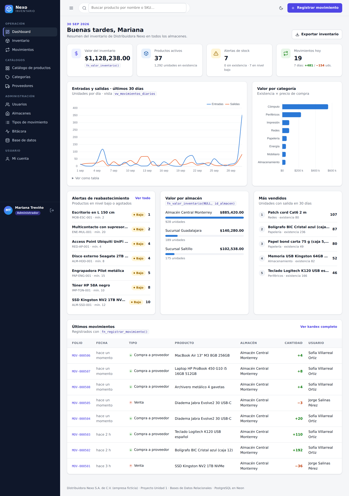
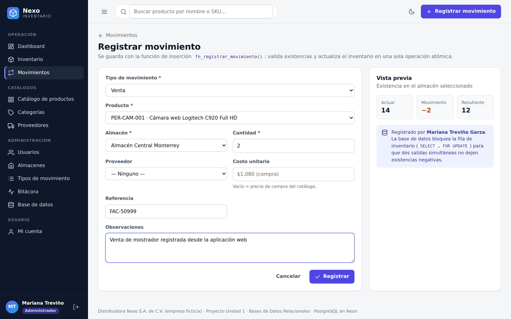
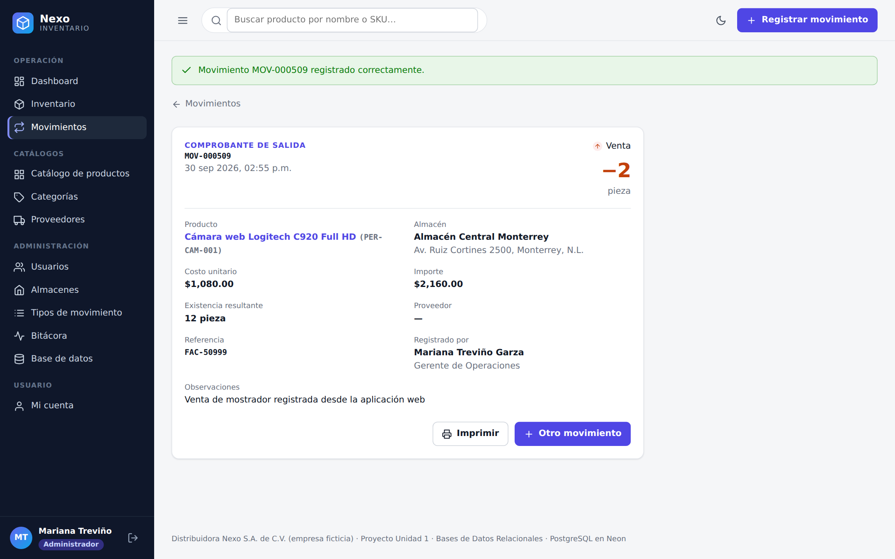
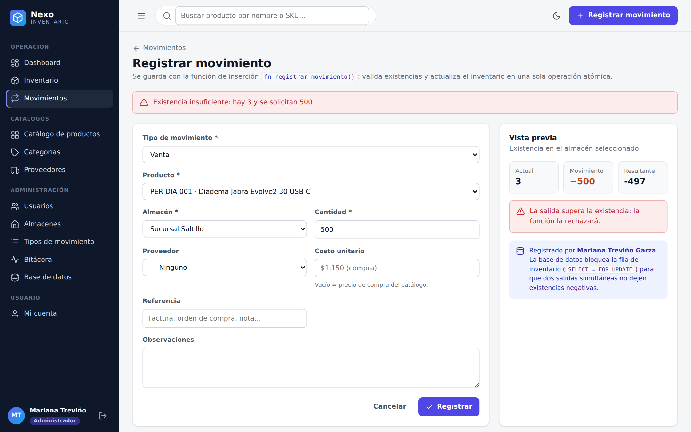
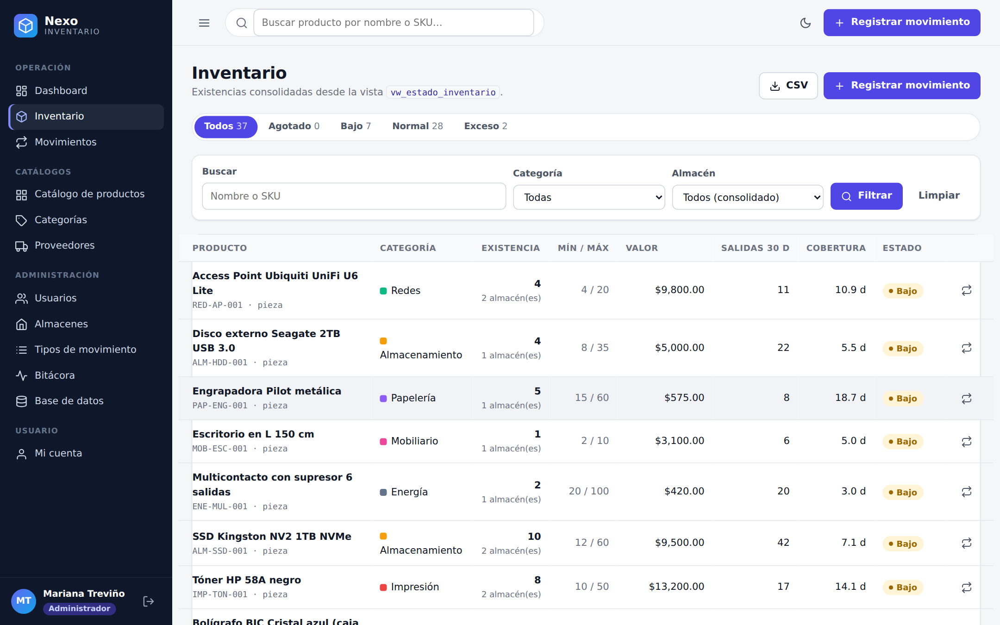
La aplicación organiza el sistema en las secciones solicitadas. En cada pantalla se indica qué objeto de la base de datos la alimenta:
| Sección | Rol de la app | Objetos de BD que utiliza |
|---|---|---|
| Dashboard | admin, usuario | fn_valor_inventario(), vw_estado_inventario, vw_movimientos_diarios |
| Inventario | admin, usuario | vw_estado_inventario, inventario (exportación CSV) |
| Catálogo | admin (CRUD), usuario (consulta) | productos, producto_proveedor (N:M), kardex de movimientos |
| Categorías | admin (CRUD), usuario (consulta) | categorias, fn_valor_inventario(id_categoria) |
| Proveedores | admin (CRUD), usuario (consulta) | proveedores, producto_proveedor, movimientos |
| Registro de movimientos | admin, usuario | fn_registrar_movimiento(), movimientos |
| Administración | sólo admin | usuarios, almacenes + fn_valor_inventario(NULL, id), tipos_movimiento, bitacora, catálogo de PostgreSQL |
| Mi cuenta (usuario) | admin, usuario | usuarios, movimientos propios, bitacora |
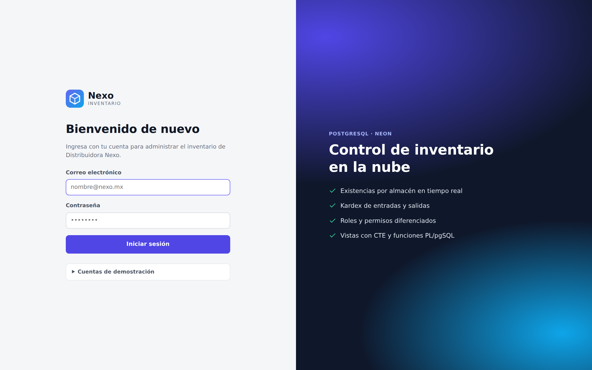
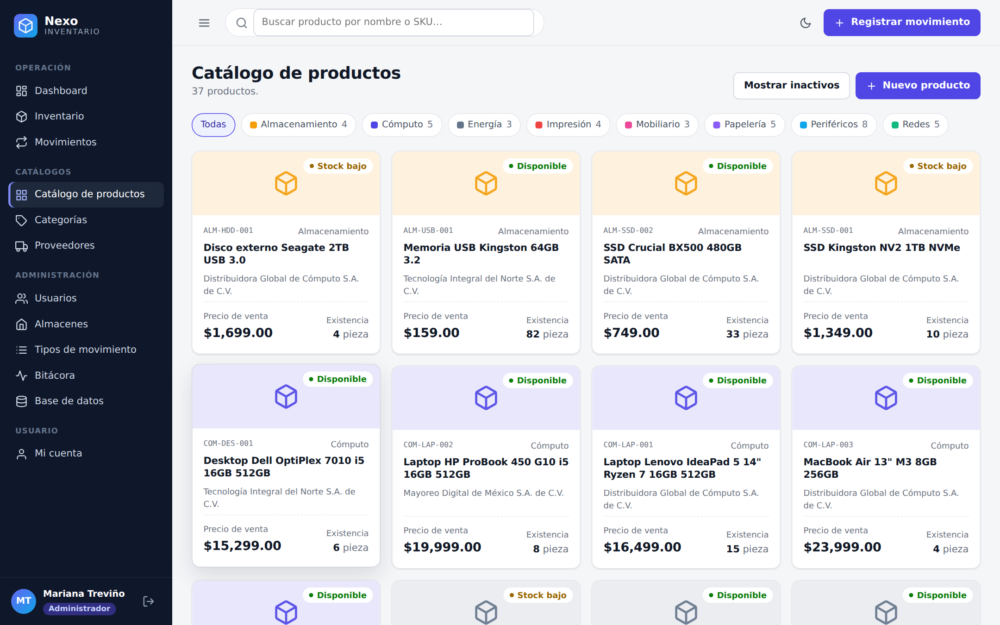
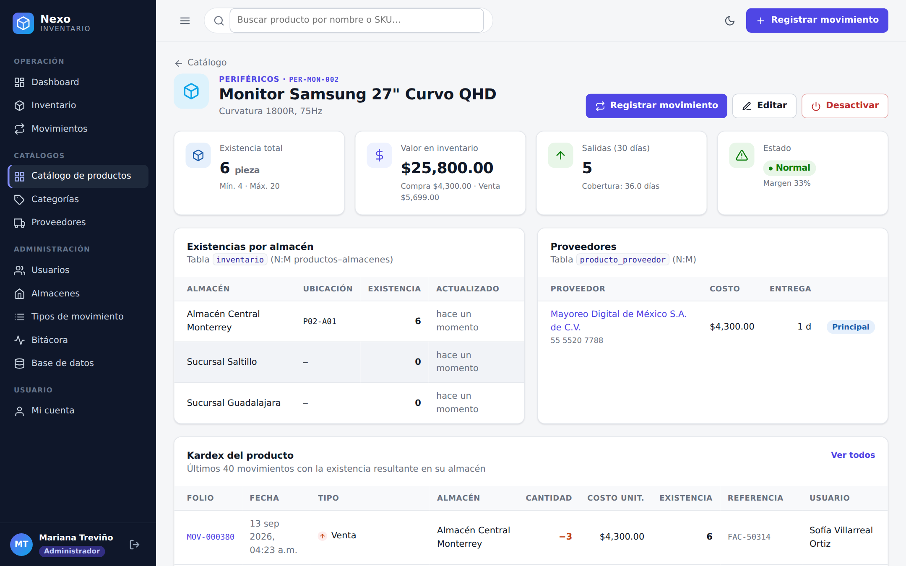
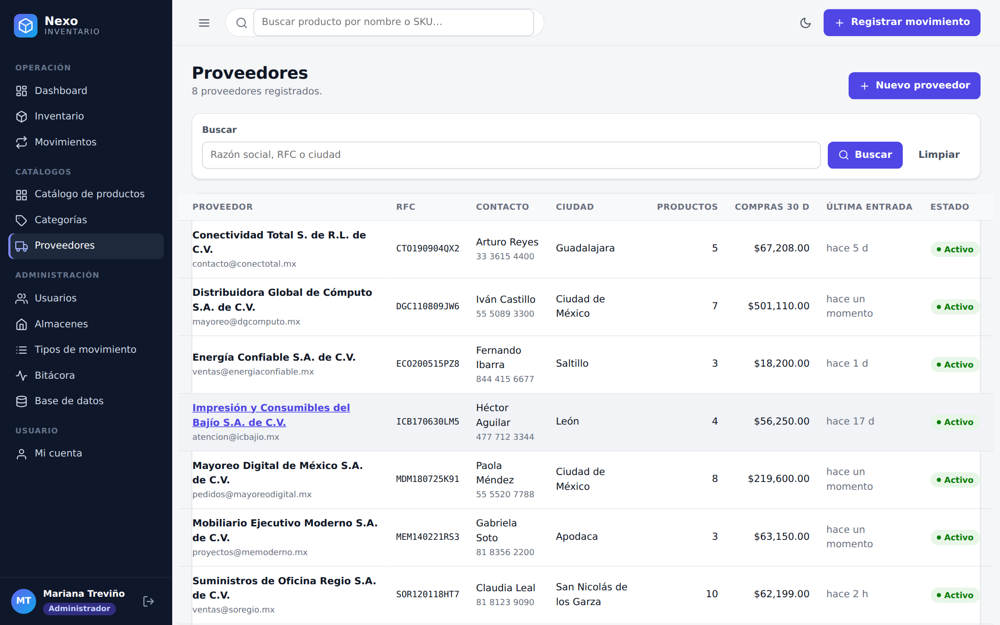
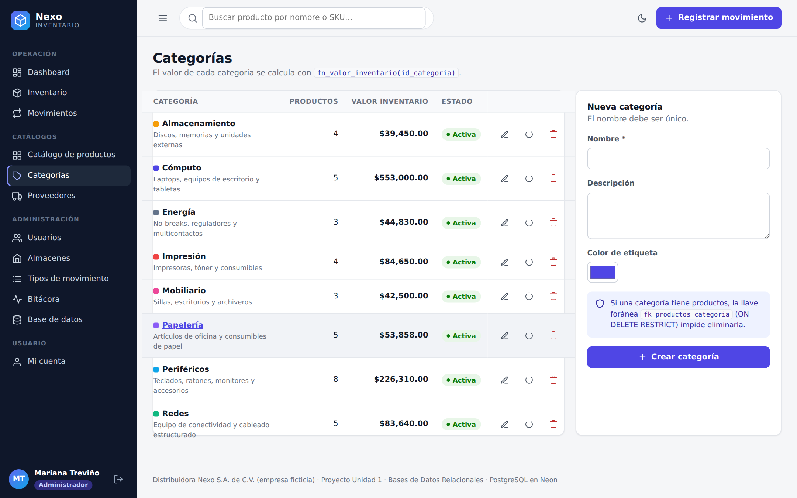
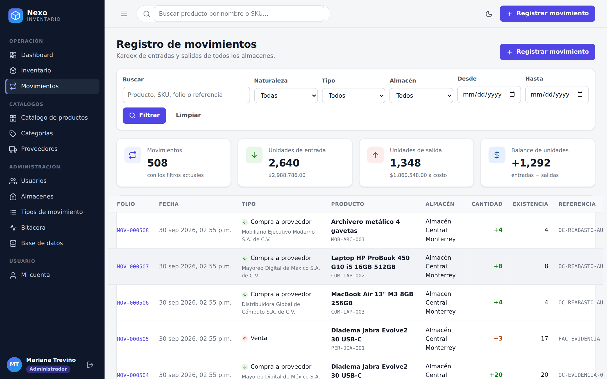
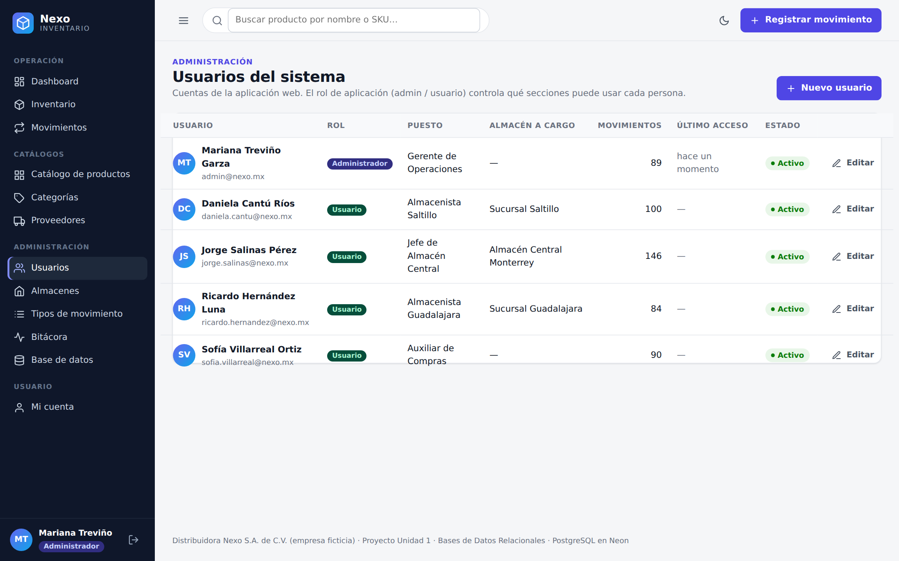
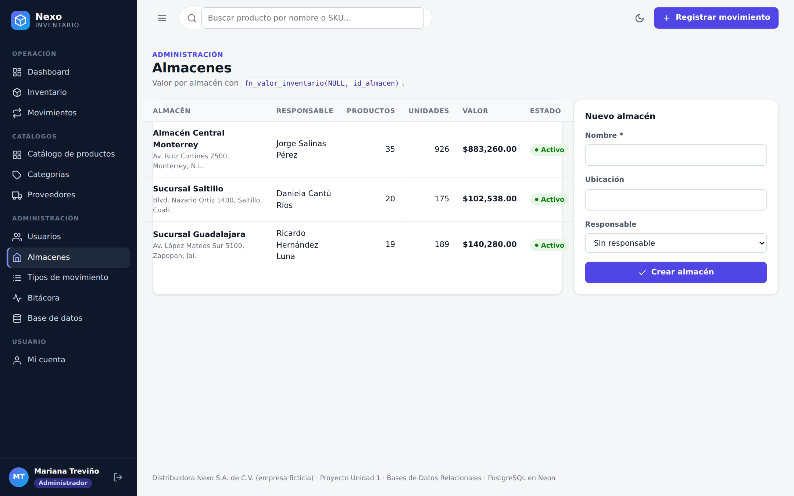
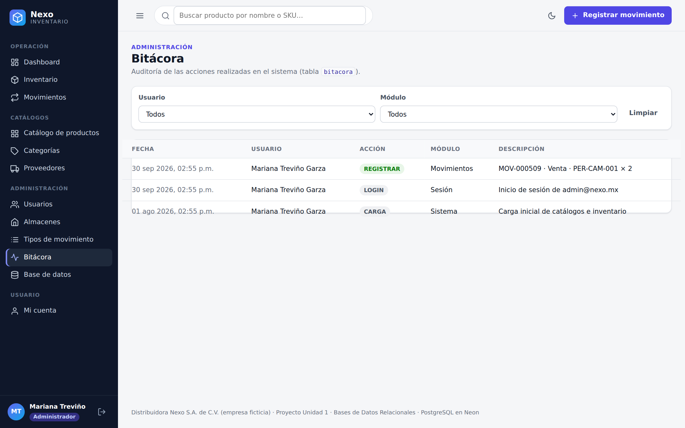
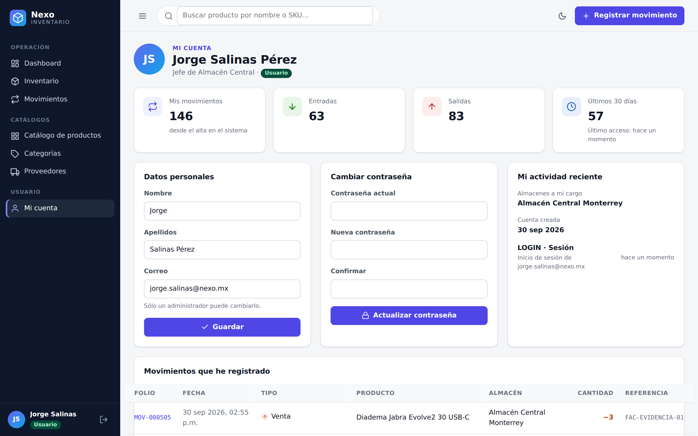
¿Qué ventajas ofrece la gestión de roles y funciones en bases de datos en la nube para proyectos reales?
La principal ventaja es que la seguridad deja de depender de que cada programa “se porte bien” y pasa a estar garantizada
por el motor de base de datos. En este proyecto la aplicación web se conecta con app_nexo, un usuario del rol
"user": aunque alguien encontrara una falla en la aplicación o robara su cadena de conexión, no podría crear, alterar ni
borrar tablas, porque PostgreSQL responde permission denied. Esto es el principio de mínimo privilegio, y en la
nube es todavía más importante, ya que la base de datos es accesible desde Internet y no está protegida sólo por la red de la empresa.
Los roles también separan responsabilidades y simplifican la administración del personal. El rol developer agrupa lo que
necesita el equipo de desarrollo y el rol "user" lo que necesita la operación diaria; dar de alta a un nuevo integrante es
un solo GRANT, y darlo de baja no afecta a nadie más. Con los privilegios por defecto comprobamos que una
tabla creada después por un desarrollador quedó disponible de inmediato para los usuarios operativos sin volver a otorgar permisos, lo
que evita errores humanos cuando el esquema crece. Además, al tener un usuario por persona o servicio, cada acción queda atribuida a
alguien, lo que facilita auditorías.
Las funciones centralizan las reglas del negocio junto a los datos. fn_registrar_movimiento valida la existencia,
bloquea la fila para evitar que dos ventas simultáneas dejen el inventario en negativo e inserta el movimiento y la nueva existencia
en una sola operación atómica. Da igual si el movimiento llega desde la aplicación web, desde un script o desde una futura app
móvil: la regla se cumple siempre y existe en un solo lugar. En la nube esto además reduce la latencia y el costo, porque una
sola llamada sustituye varias idas y vueltas por la red. Las funciones de cálculo, como fn_valor_inventario, y las vistas con
CTEs permiten que distintos reportes obtengan exactamente el mismo resultado (lo verificamos comparando la vista contra la función en
la evidencia 7) y ocultan la complejidad de las consultas a quien sólo necesita leer datos.
Por último, un servicio administrado como Neon añade ventajas propias: no hay servidor que instalar ni parchar, las conexiones van cifradas con SSL, la base de datos escala y se suspende sola según la carga, y las ramas (branches) permiten probar cambios de roles o de funciones en una copia antes de aplicarlos en producción. La contraparte es que la lógica en la base de datos también es código: debe versionarse y probarse, razón por la cual todos los scripts de este proyecto están en el repositorio y las evidencias se pueden regenerar con un solo comando.